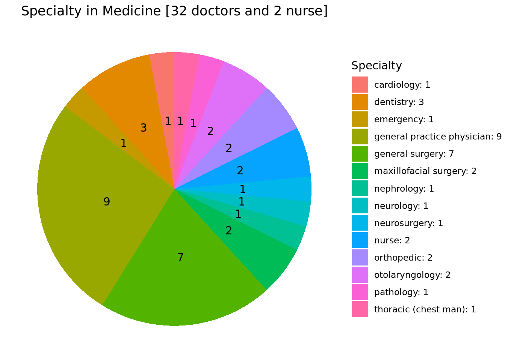

2023 COLLABORATING FOR BETTER HEALTH:
A MULTI-SPECIALTY CONFERENCE
Welcome to the 2023 MSC website
We provide information about the upcoming conference on Collaborating for Better Health: A Multi-Specialty Conference #2023MSC. This conference is a joint initiative of Taipei Municipal Wanfang Hospital and Hargeisa Group Hospital, and aims to promote knowledge exchange and collaboration among health professionals from different specialties and regions.
The conference will be held on August 13-14, 2023, from 9:00 AM to 12:00 PM, at the Conference Hall of Carro Edeg Hotel in Hargeisa, Somaliland.
To register for the conference, please click here.
If you are also a speaker at the conference, please also submit your CV and abstract to the Conference Secretariat by email: texchi2@gmail.com
Current Statistics for Registered Participants:
- Program at a Glance: ( Download Agenda )